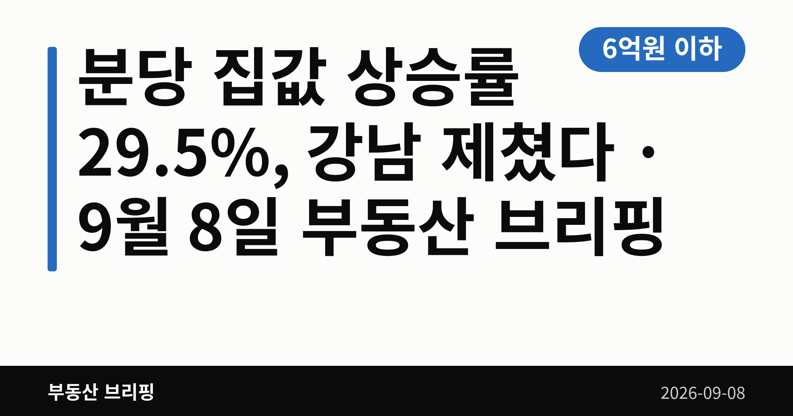
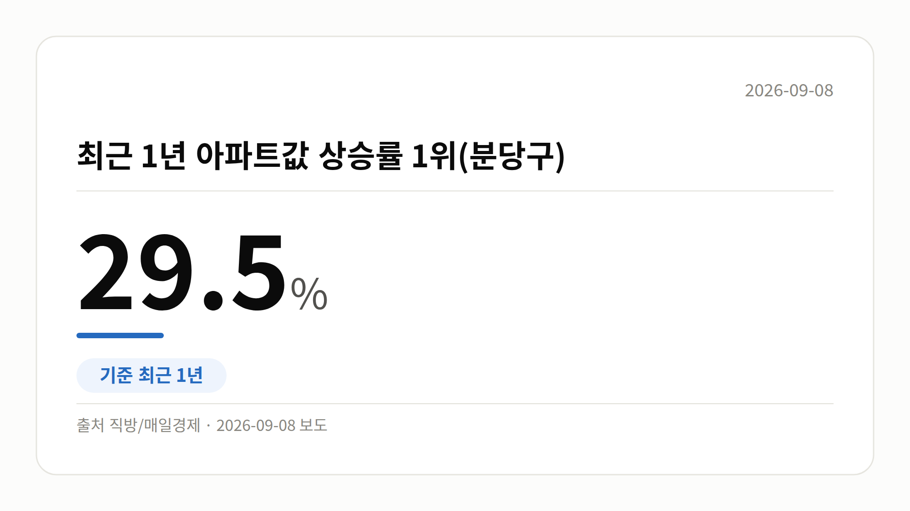
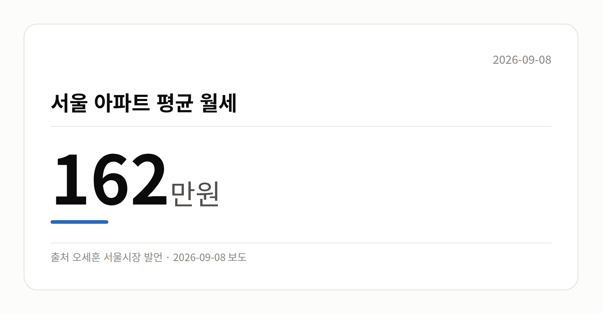
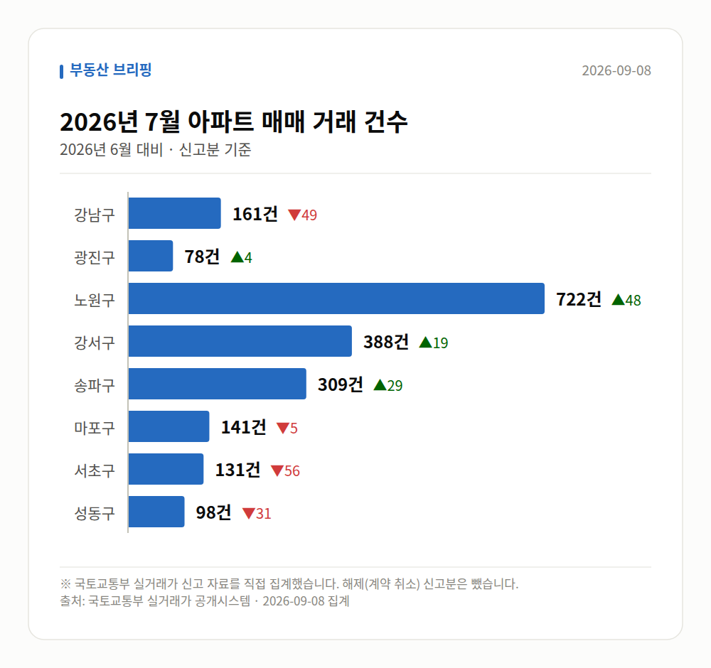

이 글은 2026년 9월 8일 기준으로 정리한 내용입니다. 실거래 수치는 2026년 7월 신고분입니다.
오늘의 숫자
| 6억원 이하 서울 정책대출(주금공) 대상 아파트 가격 기준 해당 가격대 서울 아파트가 실종됐다는 보도 | 29.5% 최근 1년 아파트값 상승률 1위(분당구) 최근 1년 | 162만원 서울 아파트 평균 월세 |
최근 1년간 전국에서 아파트값이 가장 많이 오른 곳은 강남이 아니었습니다. 직방 집계 기준 분당 집값 상승률은 29.5%로 전국 1위였습니다.
금액으로는 1년 새 4억 3천만원이 올랐다는 보도(헤럴드경제)도 나왔습니다. 오늘은 이 수치를 중심으로 차분히 짚어 보겠습니다.
직방이 최근 1년간 전국 아파트 매매시세를 집계한 결과, 성남시 분당구가 29.5%로 가장 높은 상승률을 기록했습니다.
분당구는 재건축·리모델링(기존 건물 뼈대를 남기고 고쳐 짓는 방식) 기대감이 반영되면서 지난 1년간 상승세가 뚜렷하게 이어졌다는 설명입니다.
한 가지 참고할 점이 있습니다. 서울경제는 제목에서 '1년 새 30% 급등'이라고 표현했는데, 다른 매체가 인용한 정확한 수치는 29.5%입니다. 반올림·강조 표현의 차이로 보입니다.

분당 뒤를 이은 지역도 눈여겨볼 만합니다. 서울에서는 강남권보다 비강남권 상승률이 더 높게 나타났습니다.
| 지역 | 최근 1년 상승률 |
|---|---|
| 성남시 분당구 | 29.5% |
| 경기 광명시 | 28.4% |
| 서울 동작구 | 25.3% |
(자료: 직방)
헤럴드경제는 강남을 제친 서울 지역으로 동작·광진을 꼽았습니다. 상승 축이 강남 한 곳이 아니라 수도권 여러 곳으로 퍼지고 있다는 뜻으로 읽힙니다.
다만 상위 10곳이 모두 수도권이라는 보도는 확인되지만, 10개 지역의 구체적인 명단은 공개된 자료에 담겨 있지 않습니다.

첫째, 분당 집값 상승률 29.5%는 직방 집계 기준이며 매체별 표기가 조금씩 다릅니다.
둘째, 서울 평균 월세 162만원은 산정 기간과 표본이 함께 공개되지 않았다는 점을 감안해 보셔야 합니다.
셋째, 은마아파트는 사업시행인가 이후 공사비 검증과 도급계약 협상이 다음 관전 포인트로 꼽힙니다.
서울 8개 구에서 신고된 매매는 2028건입니다. 2026년 6월 2069건과 견주면 -41건입니다.
거래가 많은 곳: 강남구 161건(-49) · 광진구 78건(+4) · 노원구 722건(+48)
강남구 전세가율(전세 보증금 ÷ 매매가)은 가운뎃값 38.8%입니다. 같은 단지·같은 면적 44곳을 견줬습니다.
서울 25개 구 가운데 거래가 가장 크게 움직인 곳: 중랑구 +140.9%(208→501건, 묵동에 66.3% 몰림) · 동작구 +55.6%(153→238건)
이번 달 신고가

→ 그림 파일 img-stats-volume.png 을 이 자리에 올리세요
국토교통부 실거래가 신고 자료를 직접 집계했습니다. 해제(계약 취소) 신고분은 뺐습니다.
여러분이 눈여겨보던 동네는 지난 1년 사이 얼마나 달라졌나요?
댓글로 알려 주시면 다음 글에 반영하겠습니다.